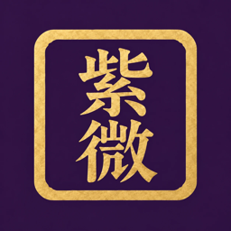
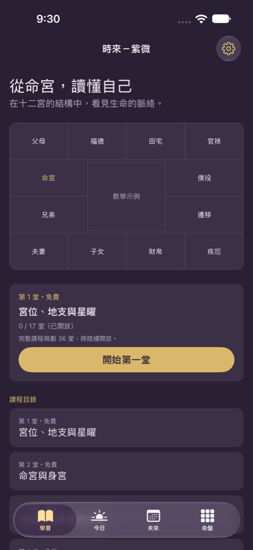
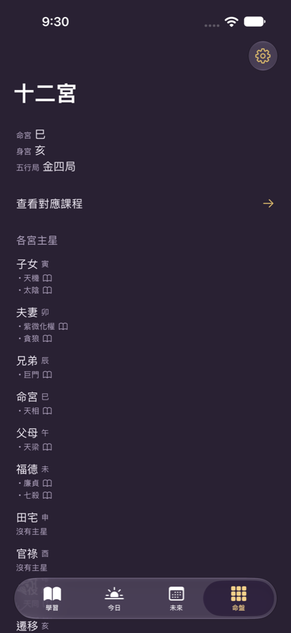

時來－紫微
從命宮開始，讀懂自己的盤・iPhone・繁體中文／英文
即將上架時來－紫微會依你的出生資料排出紫微斗數十二宮命盤，再用課程一步步帶你學會自己讀。前三堂不用先填生日就能上完。每一句解釋都分成古籍原文、白話轉述與本專案自撰三層，古籍原文只取自《紫微斗數全書》卷一至卷三，並對照原典。


適合誰
- 完全沒學過紫微斗數的初學者。
- 排過命盤卻看不懂十二宮與星曜的人。
- 想知道每句解釋出自哪裡、不想只看結論的人。
- 想用中文或英文學紫微斗數的人。
課程內容
免費三堂
- 宮位、地支與星曜
- 命宮與身宮
- 找出自己命宮的主星
會員課程
- 從認識宮位、地支與星曜開始，一路學到在自己的命盤上找出三方四正
- 時間層次：大限、小限、流年、斗君與流月
- 本版不解讀四化
主要功能
- 十二宮命盤
- 依出生資料排出紫微斗數十二宮命盤。
- 每堂四步驟
- 生活問題 → 白話圖解 → 看自己的命盤 → 同題練習，最後有兩題理解題和一題在自己命盤上找答案的練習。
- 來源分三層
- 古籍原文、白話轉述、本專案自撰，一眼分得出來。
- 命格鑑定
- 命格基本資料免費完整提供。
- 筆記與錯題本
- 可以寫筆記，答錯的題目收進錯題本。
- 中英雙語
- 繁體中文與英文隨時切換。
和一般命理 App 的差別
- 先教你讀：教的是怎麼讀盤，不是叫你背結論。
- 古籍原文只取自《紫微斗數全書》卷一至卷三，並對照原典。
- 每句解釋都標明來源層次。
- 不算吉凶、不談開運。
- 不需要帳號，資料不上傳伺服器。
名詞小辭典
- 十二宮
- 命盤分成十二個宮位，例如命宮、兄弟宮、夫妻宮，各自代表人生的一個面向。
- 命宮與身宮
- 命宮是讀盤的起點；身宮是另一個重要的參考位置。
- 主星
- 落在宮位裡的主要星曜，是讀懂一個宮位的關鍵。
- 三方四正
- 讀一個宮位時，同時參看與它相關的另外三個宮位。
- 大限、流年
- 命盤的時間層次：大限以十年為單位，流年以一年為單位。
免費與會員
免費：前 3 堂課程、當日資訊、命格基本資料，可存 2 個命盤。
會員：第 4–36 堂、六項完整導讀、未來七日、筆記與錯題本，最多 10 個命盤。
隱私
不需要帳號，資料只存在你的 iPhone，不上傳伺服器。
免費使用紫微網頁版
十二宮排盤、六項導讀、人物對照與三十六堂課都免費開放。
你主動儲存的人物與筆記只留在目前瀏覽器。
常見問題
- 有沒有能學紫微斗數的 App？
- 時來－紫微會排出十二宮命盤，並用課程教你自己讀盤，前 3 堂免費，不用先填生日就能開始。
- 紫微斗數初學者要從哪裡開始？
- 先認識宮位、地支與星曜，再找到命宮與身宮，接著找出命宮的主星，這正是 App 免費三堂的內容。
- 解釋有出處嗎？
- 有。每句都標明是古籍原文、白話轉述或本專案自撰，古籍原文只取自《紫微斗數全書》卷一至卷三。
- 時來－紫微是算命 App 嗎？
- 不是，它不算吉凶。它是學習讀盤的工具。
- 不知道出生時間可以用嗎？
- App 會直接說明，沒有出生時間就無法排出命盤；但前三堂課不需要命盤也能上完。
時來－紫微 — 讀懂自己的紫微命盤
即將於 App Store 上架。 時來－紫微會依出生資料排出紫微斗數十二宮命盤，再透過一堂堂課程教你自己讀。前三堂甚至不用先建立命盤就能完成。每句解釋都標為古籍原文、白話轉述或本專案自撰；古籍原文僅取自《紫微斗數全書》卷一至卷三，並對照原典。
適合誰
- 完全沒學過紫微斗數的初學者。
- 已有命盤，卻看不懂十二宮與星曜的人。
- 想知道每句解釋出處的學習者。
- 想用英文或繁體中文學習的人。
你會學到什麼
免費三堂
- 宮位、地支與星曜
- 命宮與身宮
- 找出自己命宮的主星
會員課程
- 從認識宮位、地支與星曜，一路學到在自己的命盤上找出三方四正
- 時間層次：大限、小限、流年、斗君與流月
- 本版不解讀四化
功能
- 十二宮命盤
- 依出生資料排出紫微斗數十二宮命盤。
- 每堂四步驟
- 生活問題 → 白話圖解 → 自己的命盤 → 練習題，接著有兩題理解題與一題在自己命盤上找答案的練習。
- 清楚標記三個層次
- 古籍原文、白話轉述與本專案自撰清楚分開。
- 命格基本資料
- 命格基本資料免費完整提供。
- 筆記與錯題本
- 可以寫筆記，答錯的題目收進錯題本。
- 雙語
- 切換繁體中文與英文。
和一般命理 App 的差別
- 先教你讀：教你讀盤，不是直接交給你結論。
- 古籍原文只取自《紫微斗數全書》卷一至卷三，並對照原典。
- 每句解釋都顯示來源層次。
- 不算吉凶，不提供開運建議。
- 不需要帳號，資料不上傳伺服器。
名詞小辭典
- 十二宮
- 命盤分成命宮、兄弟宮、夫妻宮等十二宮，各代表人生的一個面向。
- 命宮與身宮
- 命宮是讀盤起點，身宮是另一個關鍵參考位置。
- 主星
- 宮位中的主要星曜，是理解該宮的關鍵。
- 三方四正
- 讀一個宮位時，同時參看另外三個相關宮位。
- 大限與流年
- 命盤的時間層次：十年一段的大限與一年一段的流年。
免費與會員
免費： 前三堂課程、當日資訊與命格基本資料，最多儲存 2 張命盤。
會員： 第 4–36 堂、六項完整導讀、未來七日、筆記與錯題本，最多 10 張命盤。
隱私說明
不需要帳號。資料留在你的 iPhone，不會上傳伺服器。
常見問題
- 有沒有能學紫微斗數的 App？
- 時來－紫微會排出十二宮命盤，再透過課程教你解讀。前三堂免費，不需要出生資料。
- 紫微斗數初學者要從哪裡開始？
- 先認識宮位、地支與星曜，再找命宮與身宮，接著找命宮主星，這正是免費三堂的內容。
- 解釋有出處嗎？
- 有。每句都標為古籍原文、轉述或本專案自撰；古籍原文取自《紫微斗數全書》卷一至卷三。
- 不知道出生時間可以用嗎？
- 沒有出生時間就無法排盤，App 會清楚說明；但前三堂不用命盤也能學。